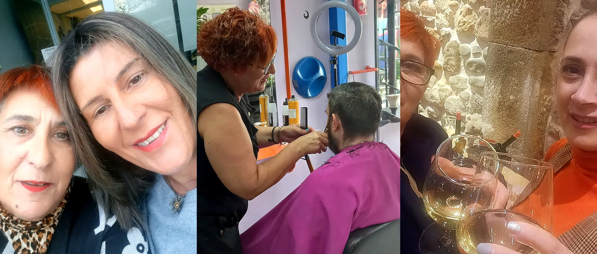
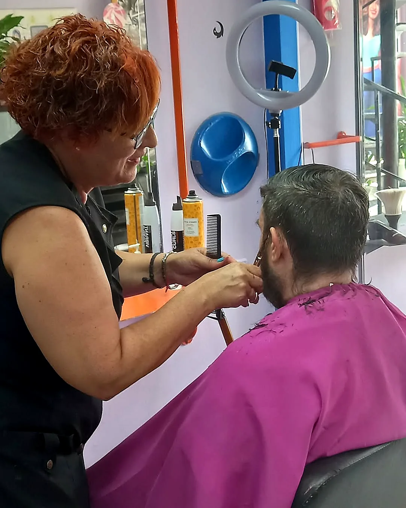
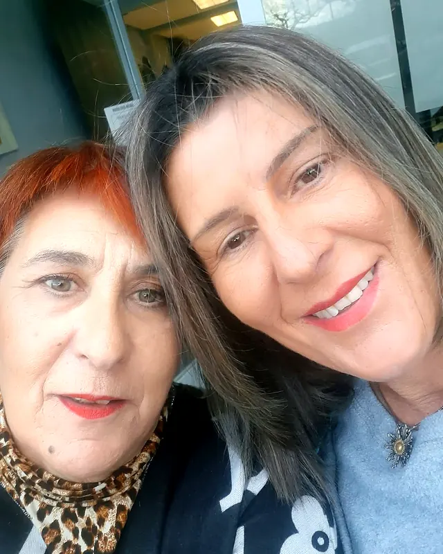
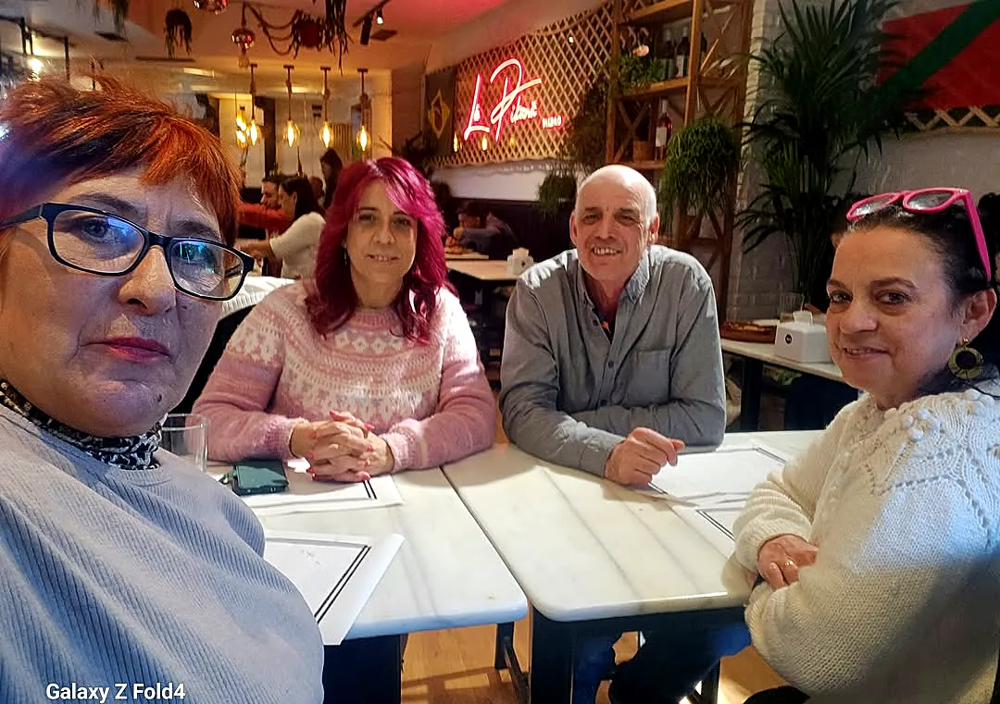

La Pelu · Guri buruz
La Pelu-ren atzean Cova dago
Covadonga «Cova» Izquierdo, Euskal Herrian estetikaren sektorean hiru hamarkada baino gehiagoko ibilbidea duen estilista sutsua.
Gure historia
Ile-apaindegi zurrunekin haustea
La Pelu de Tod@s-en atzean Covadonga «Cova» Izquierdo dago, Euskal Herrian estetikaren sektorean hiru hamarkada baino gehiagoko ibilbidea duen estilista sutsua.
Gure apaindegia ideia argi batekin jaio zen: ile-apaindegi zurrunekin haustea eta bezeroarekiko tratua entzute aktiboan eta elkarrenganako konfiantzan oinarritzen den topagune bat sortzea. Urteekin, gure bezeroak ez dira erabiltzaile hutsak: lagunak dira.
Gainera, harro gaude LGBTQ+ kolektiboarekiko espazio ofizialki atsegina eta pertsona transentzako ingurune segurua izateaz (transgender safe space). Hemen zaren bezala adierazteko askatasun osoa duzu.
«Eskerrik asko nigan konfiantza izateagatik. Eskerrik asko ni gomendatzeagatik. Eskerrik asko zuen ilea mimatzeko ile-apaindegi txiki hau aukeratzeagatik.» — Cova


Bideoan · @lapeludet2
Cova, lehen pertsonan
Sakatu eta entzun Covari nola lan egiten duen kontatzen.
Ibilbidea
Bizitza bat guraizeen artean
- 1983
Jatorria
Marka logoan ageri den data batekin jaio zen: 1983tik. Guraizeak, orrazia eta ofizio handia.
- +30 urte
Ofizioa
Hiru hamarkada baino gehiago Euskal Herrian ilea mozten, koloreztatzen eta orrazten. Ile-mozketan eta kolorean espezialista.
- Errekalde
La Pelu de Tod@s
Auzoko apaindegi bat, atsegina eta dotorea, Circunvalación errepidean: topagune bat.
- Gaur
Ile-osasuna
Landare-koloreztatzea, ile-diagnostikoak, ile-laserra, presoterapia eta solariuma. Beti ikasten.
Mugiarazten gaituena
Gure balioak
Entzute aktiboa
Guraizeak sartu aurretik, entzun egiten dugu. Zer nahi duzun, zerk kezkatzen zaituen, nola orrazten zaren.
Konfiantza
Zure ileari buruzko egia esaten dizugu, nahiz eta «gaur ez, hobe bi urratsetan» izan.
Hurbiltasuna
Denborarekin, tratua adiskidetasun bihurtzen da. Hemen etxean bezala sentitzen zara.
Ile-osasuna
Diagnostikoa, kosmetika errespetuzkoa eta % 100 aukera naturalak.
Inklusioa
Guztientzako espazio bat: LGBTQ+ friendly eta transgender safe space.
Ofizioa
30 urtetik gorako teknika, prestakuntza eta ile-apainketarekiko maitasuna.
Bezeroak eta lagunak
Bisita bakoitza hitzordu bat baino gehiago da
Zuretzako tarte bat da, deskonektatzeko espazio segurua eta denborarekin adiskidetasunez betetzen den harremana. Bisita bakoitzak, berriketaldi bakoitzak, itxura-aldaketa bakoitzak eta irribarre bakoitzak lan hau berezi bihurtzen dute.
Kolorea, argia, orrazkerak eta une politak sortzen jarraitzen dugu, baita ile-apaindegitik iritsi zinenean baino hobeto sentituz ateratzeko sentsazio hori ere.
— Cova, beti zuekin

Zerekin lan egiten dugun
Marka profesionalak eta kosmetika naturala
Benetako iritziak
Covari buruz esaten dutena
4,8 ★-ko batez bestekoa Googlen · 26 iritzi
«Es mi centro de belleza habitual desde que abrió. Siempre había querido probar otros colores en mi pelo, pero nunca me había decidido. Gracias a Cova me sentí muy a gusto y confiada. ¡Quise un cambio y a por ello que fuimos! He pasado del cabello liso y negro a una permanente, después a un rojo y ahora he regresado al liso.»
«Soy nueva en la zona y probé para teñirme. Covadonga no solo acertó con el color, sino que me encantó conocerla: muy amable, cercana y superprofesional… sé de lo que hablo porque soy peluquera.»
«La única peluquería que le pides algo y te lo hace como tú se lo pides. La mejor peluquería sin duda. 100 × 100 recomendable.»
«Estoy encantada con la textura y el volumen de mi pelo. No es mi peluquería habitual, pero gracias a los productos y la mano de la dueña creo que va a serlo.»
«Peluquería muy acogedora, te escuchan y te aconsejan bien y la peluquera es majísima. Muy contenta, ¡volveré!»
«De lo bueno lo mejor: buen trato, buena atención y siempre sabe lo que hacerte para que salgas contenta. Gran profesional.»
«Buen trabajo y buen trato. Es mi peluquería habitual. Siempre que puedo repito en la pelu de todos, me encanta este lugar.»
«Trato cercano y familiar, buena atención y buen precio. ¿Qué más se puede pedir?»
«Muy buena profesional, te da buenas ideas para peinados.»
«Cova es una gran persona y una súper profesional. La recomiendo al 100 %, volveré. ¡Gracias!»
«Gran profesional y mejor persona. Sin duda 100 % recomendable.»
«Este salón de belleza está siempre al servicio del cliente y escuchan de verdad. Lo recomiendo.»
«Nunca había sentido mi pelo tan sano después de teñirme. Gracias por cuidarme tanto.»
«Para mí, todo estupendo: amabilidad y cariño, sobre todo.»
Hitzordua emango dizugu?
Idatziguzu WhatsAppez eta besaulkian dagoen bezeroarekin amaitu bezain laster erantzungo dizugu.